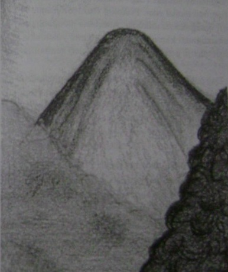

Doğanın bizi kendisine çeken bir gücü vardır. Hepimiz doğanın çocuklarıyız, onun kollarına doğduk ve bizlere cömertçe sundukları ile yaşıyoruz. Teknolojide ne harikalar yaratılırsa yaratılsın ancak doğaya döndüğümüzde gerçekten yaşamla dolarız. Tıp bilimi istediği kadar ilerlesin en iyi ilaç doğanın kendi iyileştirme gücü olarak kalacaktır.
Bir sonraki yolculuğunuz o yeşil dünyaya geri dönmek olacak. Hangi dekor kendi doğal halinizi keşfetmek için daha uygundun?
1. Çok nadir bir taşı bulmak için bir dağa tırmanmak üzere yola çıkıyorsunuz. Dağın eteklerinde durduğunuzda dağ hakkında neler düşünüyorsunuz?
2. Zorlu bir arayıştan sonra taşı hâlâ bulamadınız ve şimdi de güneş battı.
Ne yapacaksınız?
3. Sonunda aradığınız taşı buldunuz. Ne tür bir taş? Boyunu, ağırlığını ve değerini tanımlayın.
4. Artık dağdan inme ve evinize dönme zamanı. Dağla vedalaşmak için ona neler söylersiniz ve dağın cevabı ne olur?
